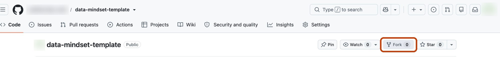

One-time setup
About 20 minutes, once, before lesson 1. Three parts: your copy of the platform on GitHub, your database on Supabase, and your AI assistant in Claude. Nothing to install.
Make your own copy (a "fork")
- Open the course repository: github.com/asafbarzilay-web/data-mindset-template
- Click Fork (top right, circled below), then Create fork.

a repository named your-name/data-mindset-template, with "forked from…" under its name. This is yours: every step from now on happens there.
Working as a group? One of you forks; then Settings → Collaborators → Add people to add the others. Your copy stays linked to the course, so new lessons reach it automatically.
Publish your site
- Go to your fork, the repository you just created:
github.com/your-name/data-mindset-template. Under its name it says "forked from asafbarzilay-web/data-mindset-template". (Not the course's original.) - Click Settings (the last tab along the top), then Pages in the menu on the left.
- Under Build and deployment: Source Deploy from a branch, branch main, folder / (root). Click Save.
- Wait a minute and refresh the page.
If Pages says "Upgrade or make this repository public", you are not on your fork: go back to the first point.
"Your site is live at https://your-name.github.io/data-mindset-template/". Keep that address: you need it in step 9.

Create a project
- At supabase.com, sign in (with your GitHub account is easiest).
- First time on Supabase? It asks you to create an organization: name it with your own name, type Personal, plan Free.
- Click New project and fill in:
Project name:data-mindset
Database password: click Generate a password, and save it in your password manager
Region: Central EU (Frankfurt) - Click Create new project and wait until it's ready (a minute or two).
the project's home page, with its address https://….supabase.co near the top.
Create the tables
- Open the database setup and click Copy the setup.
- In Supabase: SQL Editor → New query. Paste, and click Run. Confirm if it warns about destructive operations.
a small result table listing sessions, clicks, selections, identities.
Create your sign-in for the dashboard
- Authentication → Users → Add user → Create new user.
- Your email and a password you choose. Keep Auto Confirm User ticked. Click Create user.
Let the dashboard read your views
- Project Settings → Data API.
- Under Exposed schemas, add
analysis, and click Save.
Start your assistant in the cloud
- In the Claude app: Code → + New.
- Click Local (above the message box) → Cloud → Add cloud environment…
- Name:
Data-mindset. Network access: Full (so it can reach your database). Click Add environment. - Click the </> button and pick
your-name/data-mindset-template. Connect GitHub if it asks.
The environment is created once. Next time: + New, and it remembers Data-mindset and your repository.

Connect everything, in one message
Send your assistant these three, in one message:
- Your site's address (step 3).
- Your Supabase project URL: Project Settings → API.
- Your publishable key: Project Settings → API Keys, the one starting
sb_publishable_.
it fills them in, publishes your site, and says so.
Never give it, or anyone, the secret key (sb_secret_…).
Check that it works
- Open your site → Your dashboard, and sign in (step 6).
- Checks → Is capture working? → Run the check.
"Capture works". If it doesn't, ask your assistant: nothing you build will have data until it does.